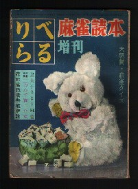
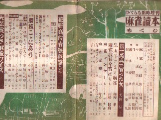

Book review 書壇。
（28）りべらる増刊 麻雀読本
某古書店で、次の本を入手した。昭和29年に刊行されたものだが、表紙にあるように、「りべらる」という雑誌の付録みたいな雑誌である。
見つけて値段も確認せずに「これください」と云ったら、思いっきり高かった。（泣）
「なんだ、その値段は！。ボロボロでペラペラで、おまけに単なる雑誌の付録じゃないか！」と云って値切りたかったが、どうやら向こうも価値は充分承知しているらしい....
無駄な抵抗は止めて黙って購入したが、たしかにそれだけの価値は充分あった。50年も経つと、単なる雑誌の付録も貴重な麻雀文献になるという証拠みたいなものだ。(^-^；
昭和29年と云えば、ようやく世の中も落ち着いてきた頃。すでに麻雀入門書や戦術書も何点か出版されている。そんな中で麻雀雑誌も登場してきたわけだ。表紙の雰囲気でも分かるように、固い本ではない。しかしたわいもない記事に挟まれて、川崎備寛や臼村有史、鹿島正次郎にみしまやすお、加藤北楼に天忠定など、戦前麻雀界の大物の執筆がある。

そういう大物の戦術論や随筆、あるいは実戦譜なども掲載されているが、あまり一般向きでもない。しかし今上陛下と麻雀した新聞記者の思いで話し、あるいは掲載されている麻雀短編小説などはけっこう面白い。それぞれ該当カテゴリーで紹介するつもりなので、お楽しみに。